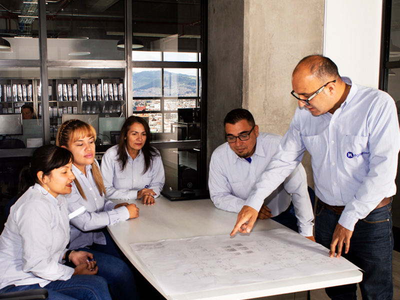
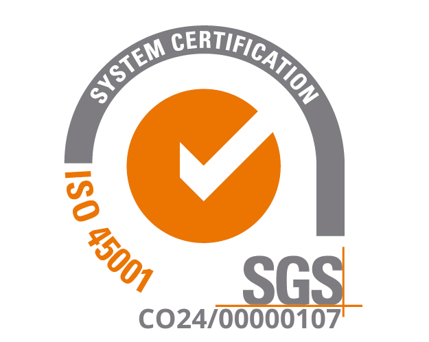
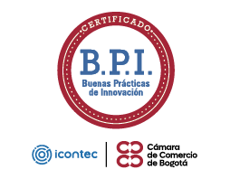

Sistema de gestión integral certificado en ISO 9001, ISO 14001 e ISO 45001, con Reglas de Oro HSE, PIENSA® y una cultura de seguridad medible.

Nuestra gente extraordinariaSeguridad y salud en el trabajo

Icontec · CCB (2022)

Cimiento: los valores (excelencia, desarrollo, compromiso, transparencia, innovación y confianza) y el cumplimiento de los requisitos legales. Cubierta: el sistema de gestión integral, con objetivos medidos, socios alineados, recursos adecuados y mejora continua.
Títulos cortos propuestos a partir de cada regla (validar con HSE); al girar, el texto completo.
Transmite el conocimiento poniendo a la persona en el centro, para que interiorice las buenas prácticas de seguridad y cambie la cultura. La lidera el personal HSE.
Siempre empieza por planificar.
Se define qué práctica tratar.
Se elige la más adecuada.
Se planea, se observa, se interviene y se registra, con retroalimentación constante.
Equipo de cada proyectoLa mano de obra directa reporta condiciones inseguras, con premio mensual a quien más reporta.
Antes "Reporto y aporto"Cada trabajador tiene el suyo: fija las sanciones por incumplir las normas.
Todos los trabajadoresLa alta dirección visita la obra: momento de seguridad, indicadores e inspección de campo.
Presidencia y Dirección HSE